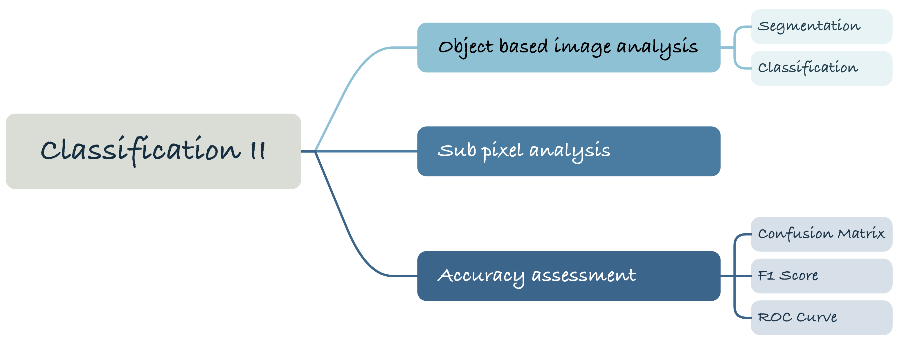
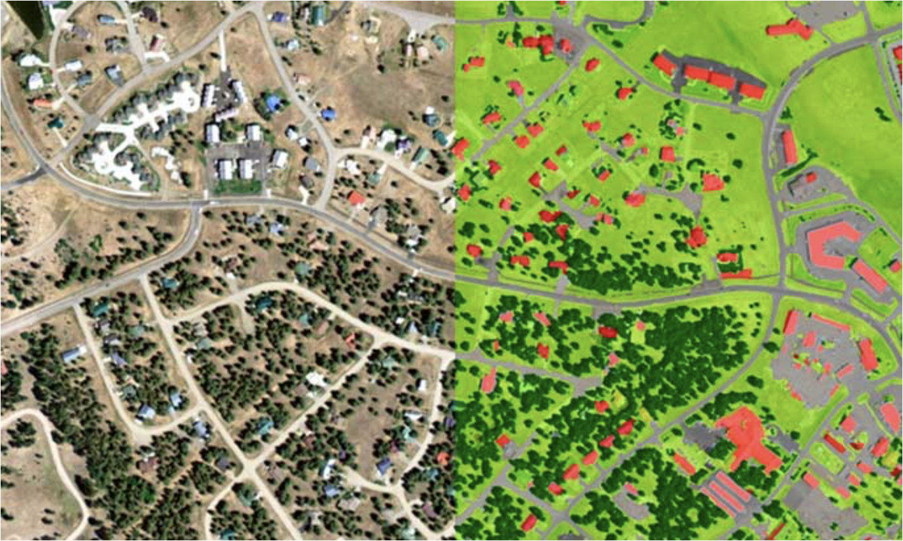
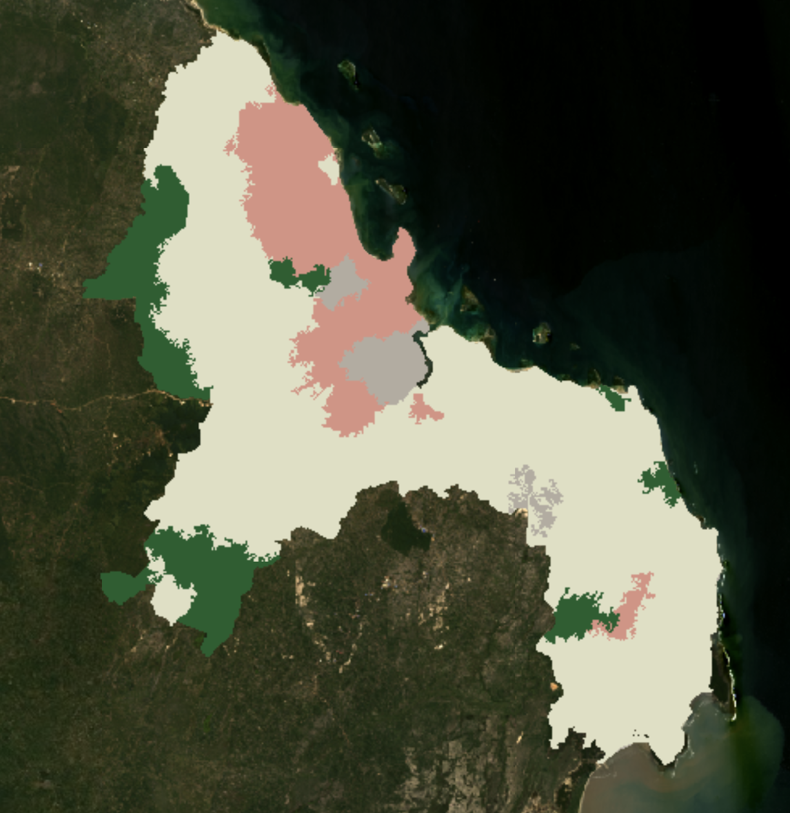
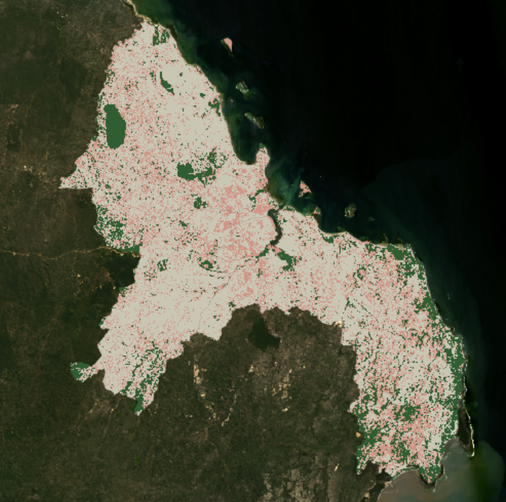
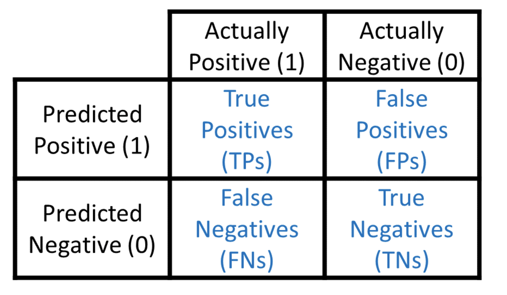

Week 08 Classification II
1. Summary

1.1 Object-based Image Analysis
Last week I was lamenting how computers are supposed to recognise categories like the human eye. It turns out it’s through data computation. But in the midst of this week’s study came an algorithm that is very similar to human visual perception: object-based image analysis (OBIA). “Think objects, not pixels” is how I would summarise this approach. The main things involved in this method are segmentation and classification.
 Pagosa Springs, Colorado, USA: Semi-automated object based classification of 1m 4-band NAIP. Classes include trees, lower vegetation, impervious type surfaces and hydrological features.
Source:Landinfo
Firstly, there is segmentation, where obia takes a small pixel image and splits it into vector objects. Simply understood, this is the process of grouping similar pixels into objects, much like the human eye does. Once you have these segmented objects, you can use its spectral, geometric, and spatial properties to divide the land cover. I view each segmented object as a Feature, a gemtry that contains additional information. then comes the classification, obia will use the shape, size and spectral properties of the object to classify each object. This is an iterative process, according to the motion picture provided in class. That is, by iteratively adjusting the segmentation parameters (e.g., segmentation scale, shape, and compactness parameters), the most suitable segmentation result for a particular application can be found.
The following results based on OBIA and using the CART method to assign land cover categories show the land cover categories for the Tanzanian capital city (urban is red, bare-earth is grey, grass is light yellow and forest is green):

The results do seem to be missing some detail, perhaps due to the presence of superpixels. The next method introduced is able to show the information inside the pixel more clearly, which is Sub-pixel Analysis.
1.2 Sub-pixel Analysis
Even within a single pixel, different substances on the ground (e.g. different types of vegetation, soil or water) can be mixed. However, in conventional analyses the reflectance value of a pixel is a weighted average of the material reflectance of the material within the pixel. In most cases, this leads to a loss of information. Therefore, sub-pixel analysis aims to distinguish and quantify the proportion of each component in these mixed pixels, thus recovering some of the lost spatial information. The following is the result obtained by applying sub-pixel analysis in practical:

It can be clearly seen that there are more details in the classification than OBIA, which seems to make the results more realistic and reliable. But how to quantitatively evaluate the results is also a problem worth thinking about, so the next part is the Accuracy assessment.
1.3 Accuracy assessment
The main centrepiece of the assessment of the accuracy of classification problems is the Confusion Matrix. The Confusion Matrix, which is used to show the relationship between the actual categories and the model’s predicted categories, provides an intuitive way to understand the model’s performance on each category, including its accuracy, false alarm rate, miss rate, and other key metrics.
 Source: Draelos, 2019
In a binary classification problem, the confusion matrix consists of four components: - True Positives (TP): the number of classes that the model correctly predicts as positive. - False Positives (FP): the number of classes that the model incorrectly predicts as positive (actually negative). - True Negatives (TN): the number of classes that the model correctly predicts as negative. - False Negatives (FN): the number of negative classes that the model incorrectly predicts (actually positive classes).
The confusion matrix allows for the calculation of a variety of assessment metrics:
Accuracy: the proportion of all correctly predicted observations to the total number of observations. The formula is
\[ \text{Accuracy} = \frac{TP + TN}{TP + TN + FP + FN} \]
Precision: the accuracy of the positive class prediction, i.e., the proportion of true examples that are predicted to be positive. The formula is
\[ \text{Precision} = \frac{TP}{TP + FP} \]
Recall, also known as the true instance rate: the proportion of positive class observations captured by the model. The formula is
\[ \text{Recall} = \frac{TP}{TP + FN} \]
F1 Score: the reconciled average of precision and recall, used to measure the balance between model accuracy and recall. The formula is
\[ \text{F1 Score} = 2 \cdot \frac{\text{Precision} \cdot \text{Recall}}{\text{Precision} + \text{Recall}} \]
2. Application
The first is that there is an open source machine learning website on EO training.
Matarira et al. show that the convenience of the simple non-iterative clustering (SNIC) algorithm in Google Earth Engine (GEE) offers Geographic Object-Based Image Analysis (GEOBIA) the potential to map the spatial morphology of deprived neighbourhoods in the complex built environment of Durban. They demonstrated the effectiveness of OBIA in GEE mapping applications by integrating Sentinel-1, Sentinel-2 and PlanetScope satellite data to enable object-based mapping of informal settlements in GEE. But OBIA’s constant search for segmentation classification steps can be very time-consuming when encountering large-scale or high-resolution datasets. And I think one of the major factors for the success of this research is that the data provided by PlanetScope is of high enough resolution so that OBIA can segment and classify the objects well.
Vos et al. completed the development of CoastSat on the GEE platform, which utilises sub-pixel resolution boundary segmentation for shoreline detection and possesses high accuracy. However, it is rather unfortunate not to see comparisons between different models. For example, would there be a difference in performance between a linear spectral unmixing model and a linear combination of reflectance. And the article doesn’t provide an in-depth explanation of how the algorithm determines the proportion of surface types within a pixel, perhaps also because the models themselves are less interpretable. But nonetheless, the results of the algorithm runs can provide accurate results and INSIGHTS for policy makers, or maybe that’s the beauty of sub-pixel analysis.
3. Reflection
Parente et al. (2019) evaluated the performance of machine learning approaches, including deep learning algorithms implemented using TensorFlow, for mapping pasturelands in Central Brazil. Wang et al. (2020) proposed a method that combines GEE with a multiscale convolutional neural network (MSCNN) for urban water extraction from Landsat images. Balaniuk et al. (2020) explored the use of deep learning methods to detect surface mines and mining tailings dams in Brazil using multispectral Sentinel-2 satellite imagery processed in the GEE platform.
More and more research is trying to combine GEE and deep learning, and this trend is really in line with the main theme of the AI era. Although deep learning frameworks or models are still like a black box, it is not easy to explain the principles behind the theories. But from a practical point of view, it can provide more advanced recognition or more accurate classification, offering potential solutions to more complex problems. Like Sub-pixels analysis, it may not be necessary to specify exactly how to infer the proportion of land types within a pixel, just learn to use it and analyse the results. After this week’s study and research, I’m even more convinced about last week’s resource integration. Despite the advantages that GEE already has, Jean has some disadvantages that need to be supplemented by other resources. Hopefully in the future I can empower GEE with deep learning as well.